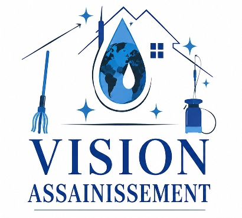
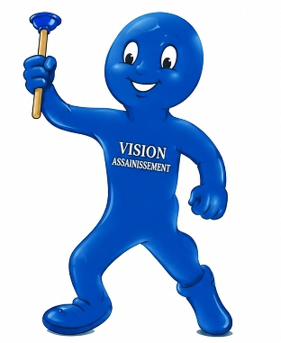

Désinsectisation
Lutte contre les insectes nuisibles tels que les moustiques, les cafards, les termites, les fourmis, etc.


Hygiène - Assainissement - Environnement
KOKOSSAMA D. Fatao
Ingénieur en santé et environnement
Directeur Général
Vision assainissement vous accompagne dans la lutte contre les nuisibles, la désinfection, le néttoyage et l'entretien des locaux, ainsi que dans le conseil en hygiène, assainissement et environnement.
Nous contacterVision Assainissement est une entreprise spécialisée dans l'higiène
, l'assainissement et l'environnement. Elle accompagne les particuliers,
les entreprises et les établissement dans le préservation d'un environnement sain et adapté à leurs besoins.
Forte de son expertise en santé, assainissement et environnement, Vision Assainissement
met son savoir-faire au service de ses clients afin de contribuer à
l'amélioration de leur cadre de vie et de travail.
Lutte contre les insectes nuisibles tels que les moustiques, les cafards, les termites, les fourmis, etc.
Intervention contre les reptiles nuisibles tels que les serpents, les geckos, les crapauds, etc.
Lutte contre les rongeurs nuisibles tels que les souris, les rats et les mulots.
Traitement contre les microbes et les germes pathogènes susceptibles de nuire à la santé humaine.
Mise à disposition de matériels et de produits destinés à l'hygiène et à l'assainissement.
Vente de produits destinés à la protection des cultures et à la lutte contre les organismes nuisibles.
Réalisation d'études permettant d'évaluer les impacts environnementaux et sociaux liés aux projets.
Accompagnement et conseils dans les domaines de l'hygiène, de l'assainissement et de la protection de l'environnement.
Téléphone : +228 90 20 57 48 / 97 40 09 51
Email : gkokossama@gmail.com
adresse : Agoè-Sogbossito, non loin de la clôture des soeurs canossiennes, lomé-Togo